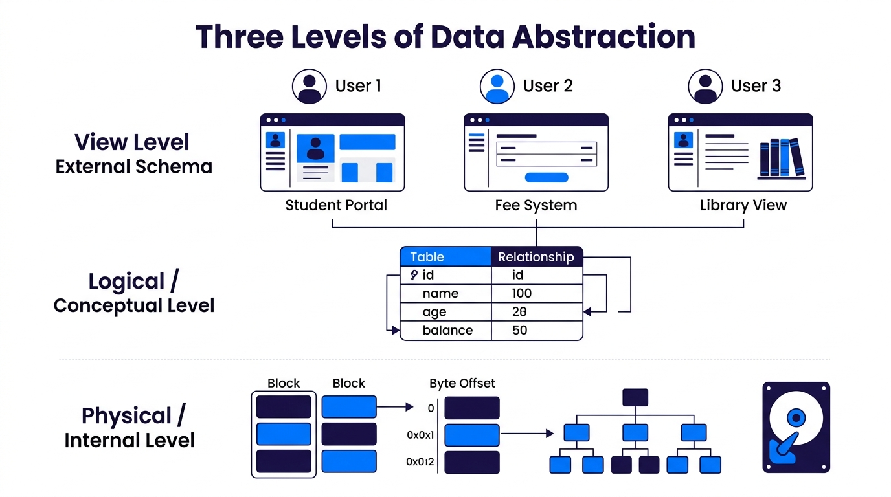

Data Abstraction in DBMS
Understand how DBMS hides complex internal storage details using the Three-Level ANSI/SPARC Architecture: Physical Level, Logical Level, and View Level.
💡 1. What is Data Abstraction?
Data Abstraction is the process of hiding complex background implementation and low-level storage details from database users, presenting only the information relevant to their needs.
🖼️ Visual Diagram: Three Levels of Data Abstraction
Below is the visual architecture breakdown showing how users access the database at different abstraction levels:

🧱 2. The Three Levels of Abstraction
1.2.1 Physical Level (Internal Schema) ⚙️
The lowest level of data abstraction. It describes HOW the data is physically stored on secondary storage media (hard drives, SSDs).
- Focus: Data structures, byte offsets, block sizes, file organization, B-Tree indices, and hashing algorithms.
- Example: Storing a student record in a 128-byte block at memory offset
0x00A412using a contiguous file structure. - Audience: Database System Programmers & Hardware Architects.
1.2.2 Logical / Conceptual Level (Logical Schema) 🧩
The middle level of data abstraction. It describes WHAT data is stored in the entire database and what RELATIONSHIPS exist among those data.
- Focus: Relational tables, column names, data types, candidate keys, foreign keys, and integrity constraints.
- Example: Defining
STUDENT(RollNo: INT, Name: VARCHAR, Branch: VARCHAR, Marks: FLOAT). - Audience: Database Administrators (DBAs) and Application Developers.
1.2.3 View Level / External Level (External Schema) 👁️
The highest level of data abstraction. It describes only the PART of the database that is relevant to a specific user or group of users.
- Focus: Customized views, security masks, simplified user interfaces.
- Example:
- Student View: Sees only Roll No, Name, and Subject Marks.
- Accountant View: Sees Roll No, Name, Fees Paid, and Due Balance.
- Audience: End Users, Analysts, and Business Staff.
📊 Summary Table: Comparing the 3 Levels
| Abstraction Level | Schema Name | Question Answered | Primary Audience | Complexity |
|---|---|---|---|---|
| View Level | External Schema | Which part of data to display? | End Users / Clients | Simple / Hidden Complexity |
| Logical Level | Logical / Conceptual Schema | What data & relationships exist? | DBAs & Developers | Medium / Structural |
| Physical Level | Internal Schema | How is data stored on disk? | System Programmers | High / Hardware & Algorithms |
🔑 Important Related Concept: Schema vs Instance
1. Database Schema (Blueprint): The overall structure/design of the database at any level. It is defined during database design and changes very rarely (e.g. table columns, data types).
2. Database Instance (State): The actual collection of information stored in the database at a particular moment in time. It changes frequently as rows are inserted, updated, or deleted.
🎯 IBPS SO IT Officer — Exam Focus & Past PYQ Cues
Q1: Which level of data abstraction describes HOW the data is stored in the database?
👉 Answer: Physical Level (Internal Schema).
Q2: Which level of data abstraction describes WHAT data is stored in the database and what relationships exist?
👉 Answer: Logical / Conceptual Level (Logical Schema).
Q3: Database Views (CREATE VIEW) in SQL are implemented at which abstraction level?
👉 Answer: View Level (External Schema).